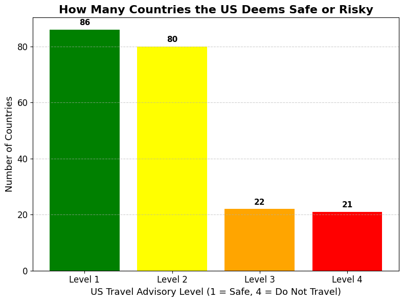
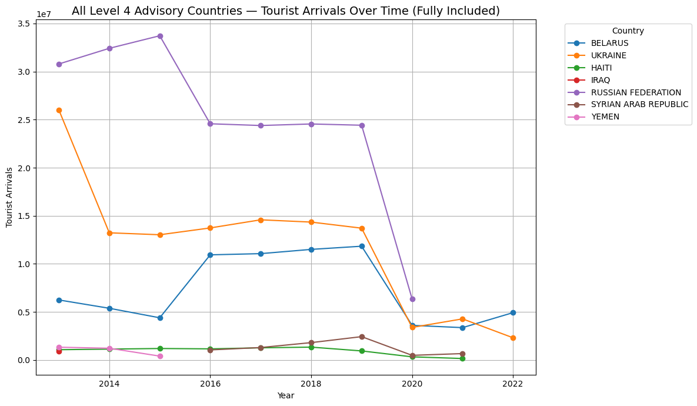
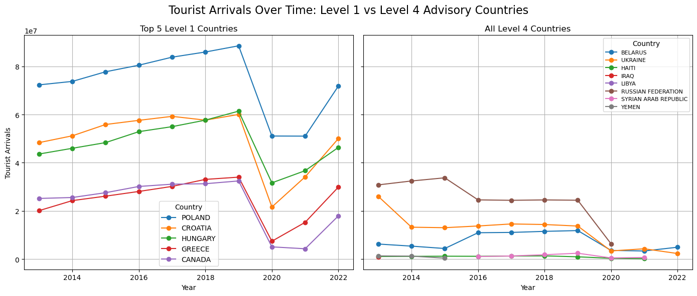
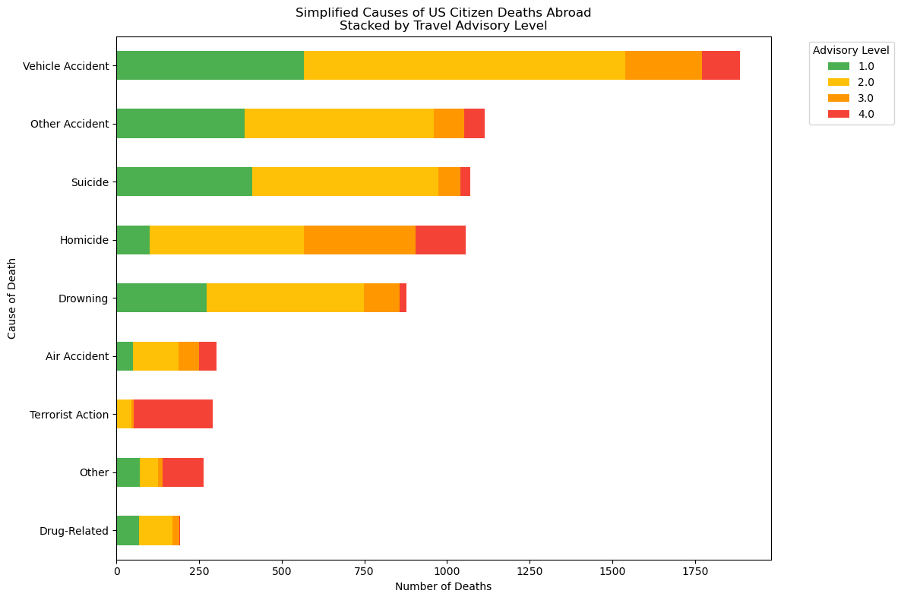

import pandas as pd
import matplotlib.pyplot as plt
import ipywidgets as widgets
from IPython.display import display, clear_output
# Load data
df = pd.read_csv("../../../data/processed/Travel_Advisories_Processed.csv")
df["Advisory Level Number"] = pd.to_numeric(df["Advisory Level Number"], errors="coerce")import matplotlib.pyplot as plt
# Redefine counts and labels
advisory_counts = df["Advisory Level Number"].value_counts().sort_index()
colors = ['green', 'yellow', 'orange', 'red']
labels = ["Level 1", "Level 2", "Level 3", "Level 4"]
# Create improved bar chart
plt.figure(figsize=(8, 6))
bars = plt.bar(labels, advisory_counts, color=colors)
# Add data labels on top of bars
for bar in bars:
height = bar.get_height()
plt.text(bar.get_x() + bar.get_width()/2, height + 1, f'{int(height)}',
ha='center', va='bottom', fontsize=11, fontweight='bold')
# Add titles and labels
plt.title("How Many Countries the US Deems Safe or Risky", fontsize=16, fontweight='bold')
plt.xlabel("US Travel Advisory Level (1 = Safe, 4 = Do Not Travel)", fontsize=13)
plt.ylabel("Number of Countries", fontsize=13)
plt.xticks(fontsize=12)
plt.yticks(fontsize=12)
plt.grid(axis='y', linestyle='--', alpha=0.6)
plt.tight_layout()
plt.show()
import plotly.express as px
import pandas as pd
# Example data
df = pd.DataFrame({
"Advisory Level": [1, 2, 3, 4],
"Countries": [86, 80, 22, 21],
"Label": ["Safe", "Caution", "Risky", "Danger"]
})
fig = px.bar(
df,
x="Advisory Level",
y="Countries",
color="Label",
text="Countries",
color_discrete_map={
"Safe": "forestgreen",
"Caution": "yellow",
"Risky": "orange",
"Danger": "red"
}
)
fig.update_layout(
#title="How Many Countries the US Deems Safe or Risky",
xaxis_title="US Travel Advisory Level",
yaxis_title="Number of Countries",
showlegend=False,
xaxis=dict(
tickmode='array',
tickvals=[1, 2, 3, 4],
ticktext=["Level 1", "Level 2", "Level 3", "Level 4"]
),
paper_bgcolor="rgba(0,0,0,0)",
plot_bgcolor="rgba(0,0,0,0)",
xaxis_gridcolor="rgba(255,255,255,0.1)",
yaxis_gridcolor="rgba(255,255,255,0.1)",
font=dict(color="white")
)
fig.update_traces(textposition='outside')
fig.write_html(
"../../img/traveladvice.html",
full_html=True,
include_plotlyjs="cdn",
config={"responsive": True}
)
fig.show()Unable to display output for mime type(s): application/vnd.plotly.v1+json# Load both datasets
advisories = pd.read_csv("../../data/processed/Travel_Advisories_Processed.csv")
arrivals = pd.read_csv("../../data/processed/inbound_arrivals_processed.csv")# Step 1: Prepare both datasets
advisories["COUNTRY_UPPER"] = advisories["Country"].str.upper().str.strip()
arrivals["COUNTRY_UPPER"] = arrivals["Country"].str.upper().str.strip()
# Use same manual fixes as before
country_name_fixes = {
"BURMA (MYANMAR)": "MYANMAR",
"CZECH REPUBLIC": "CZECHIA",
"COTE D'IVOIRE": "IVORY COAST",
"FEDERATED STATES OF MICRONESIA": "MICRONESIA",
"DEMOCRATIC REPUBLIC OF THE CONGO": "CONGO (KINSHASA)",
"REPUBLIC OF THE CONGO": "CONGO (BRAZZAVILLE)",
"KOSOVO": "SERBIA",
"SWAZILAND": "ESWATINI",
"EAST TIMOR": "TIMOR-LESTE",
"VATICAN CITY": "VATICAN",
"NORTH MACEDONIA": "MACEDONIA",
"SAO TOME AND PRINCIPE": "SAO TOME & PRINCIPE",
"SYRIA": "SYRIAN ARAB REPUBLIC",
"LAOS": "LAO PEOPLE'S DEMOCRATIC REPUBLIC",
"RUSSIA": "RUSSIAN FEDERATION",
}
advisories["COUNTRY_MERGED"] = advisories["COUNTRY_UPPER"].replace(country_name_fixes)
arrivals["COUNTRY_MERGED"] = arrivals["COUNTRY_UPPER"]
# Step 2: Create 10-year average
years = [str(y) for y in range(2013, 2023)]
arrivals["avg_arrivals"] = arrivals[years].mean(axis=1)
# Step 3: Merge datasets
advisories_clean = advisories[["COUNTRY_MERGED", "Advisory Level Number"]]
arrivals_clean = arrivals[["COUNTRY_MERGED", "avg_arrivals"]]
merged = pd.merge(advisories_clean, arrivals_clean, on="COUNTRY_MERGED").dropna()
# Step 4: Get top 5 countries for each advisory level
top5_by_level = (
merged.groupby("Advisory Level Number")
.apply(lambda x: x.nlargest(5, "avg_arrivals"))
.reset_index(drop=True)
)
top5_by_level.head(10)/var/folders/7t/dpwxgyj14sn5gpv6rfjdybcw0000gn/T/ipykernel_44445/4203121054.py:38: DeprecationWarning:
DataFrameGroupBy.apply operated on the grouping columns. This behavior is deprecated, and in a future version of pandas the grouping columns will be excluded from the operation. Either pass `include_groups=False` to exclude the groupings or explicitly select the grouping columns after groupby to silence this warning.
| COUNTRY_MERGED | Advisory Level Number | avg_arrivals | |
|---|---|---|---|
| 0 | POLAND | 1.0 | 7.364600e+07 |
| 1 | CROATIA | 1.0 | 4.956390e+07 |
| 2 | HUNGARY | 1.0 | 4.795280e+07 |
| 3 | GREECE | 1.0 | 2.483350e+07 |
| 4 | CANADA | 1.0 | 2.304811e+07 |
| 5 | FRANCE | 2.0 | 1.903231e+08 |
| 6 | CHINA | 2.0 | 1.086672e+08 |
| 7 | SPAIN | 2.0 | 1.001122e+08 |
| 8 | ITALY | 2.0 | 7.519296e+07 |
| 9 | UNITED KINGDOM | 2.0 | 3.157740e+07 |
import ipywidgets as widgets
from IPython.display import display, clear_output
import matplotlib.pyplot as plt
# Dropdown widget
dropdown = widgets.Dropdown(options=[1, 2, 3, 4], description="Advisory Level")
arrivals_full = arrivals[["COUNTRY_MERGED"] + years]
full_merged = pd.merge(advisories_clean, arrivals_full, on="COUNTRY_MERGED").dropna()
# Interactive plot function
def plot_top5_line_graph(level):
clear_output(wait=True)
display(dropdown)
level_data = full_merged[full_merged["Advisory Level Number"] == level].copy()
level_data["avg_arrivals"] = level_data[years].mean(axis=1)
top5 = level_data.nlargest(5, "avg_arrivals")
plt.figure(figsize=(10, 6))
for _, row in top5.iterrows():
plt.plot([int(y) for y in years], row[years].values, label=row["COUNTRY_MERGED"], marker='o')
plt.title(f"Top 5 Countries (Level {level}) - Tourist Arrivals Over Time")
plt.xlabel("Year")
plt.ylabel("Tourist Arrivals")
plt.legend(title="Country")
plt.grid(True)
plt.tight_layout()
plt.show()
widgets.interact(plot_top5_line_graph, level=dropdown)<function __main__.plot_top5_line_graph(level)>import numpy as np
# Manually include countries that were overlooked due to minor issues but exist in arrivals data
manually_include = [
"HAITI", "IRAQ", "LIBYA", "RUSSIAN FEDERATION", "SYRIAN ARAB REPUBLIC", "YEMEN"
]
# Filter from arrivals
manual_additions = arrivals[arrivals["COUNTRY_MERGED"].isin(manually_include)].copy()
# Merge with their advisory level (they're all Level 4)
manual_additions = pd.merge(manual_additions, advisories_clean, on="COUNTRY_MERGED", how="left")
# Ensure year values are numeric
manual_additions[years] = manual_additions[years].apply(pd.to_numeric, errors='coerce')
level_4_all = full_merged[full_merged["Advisory Level Number"] == 4].copy()
level_4_all[years] = level_4_all[years].apply(pd.to_numeric, errors='coerce')
# Combine with the original Level 4 dataset (without duplicates)
combined_level_4 = pd.concat([level_4_all, manual_additions]).drop_duplicates(subset=["COUNTRY_MERGED"])
# Plot updated set
plt.figure(figsize=(12, 7))
for _, row in combined_level_4.iterrows():
country = row["COUNTRY_MERGED"]
arrivals_values = row[years].values.astype(float)
if not np.all(np.isnan(arrivals_values)):
plt.plot([int(y) for y in years], arrivals_values, label=country, marker='o')
plt.title("All Level 4 Advisory Countries — Tourist Arrivals Over Time (Fully Included)", fontsize=14)
plt.xlabel("Year")
plt.ylabel("Tourist Arrivals")
plt.legend(title="Country", bbox_to_anchor=(1.05, 1), loc='upper left')
plt.grid(True)
plt.tight_layout()
plt.show()
# Define Level 1 dataset from full_merged
level_1 = full_merged[full_merged["Advisory Level Number"] == 1].copy()
level_1[years] = level_1[years].apply(pd.to_numeric, errors="coerce")
# Get top 5 Level 1 countries by average arrivals
level_1["avg_arrivals"] = level_1[years].mean(axis=1)
top5_level_1 = level_1.nlargest(5, "avg_arrivals")
# Plot Level 1 vs Level 4 side-by-side
fig, axs = plt.subplots(1, 2, figsize=(14, 6), sharey=True)
# Left: Level 1
for _, row in top5_level_1.iterrows():
axs[0].plot([int(y) for y in years], row[years].values, label=row["COUNTRY_MERGED"], marker='o')
axs[0].set_title("Top 5 Level 1 Countries")
axs[0].set_xlabel("Year")
axs[0].set_ylabel("Tourist Arrivals")
axs[0].grid(True)
axs[0].legend(title="Country")
# Right: Level 4 (already defined)
for _, row in combined_level_4.iterrows():
axs[1].plot([int(y) for y in years], row[years].values, label=row["COUNTRY_MERGED"], marker='o')
axs[1].set_title("All Level 4 Countries")
axs[1].set_xlabel("Year")
axs[1].grid(True)
axs[1].legend(title="Country", fontsize=8)
fig.suptitle("Tourist Arrivals Over Time: Level 1 vs Level 4 Advisory Countries", fontsize=16)
plt.tight_layout()
plt.show()
from plotly.subplots import make_subplots
import plotly.graph_objects as go
x_years = [int(y) for y in years]
fig = make_subplots(rows=1, cols=2, shared_yaxes=True,
subplot_titles=["Top 5 Level 1 Countries", "All Level 4 Countries"])
# Level 1 Countries (no per-country legends)
for _, row in top5_level_1.iterrows():
fig.add_trace(go.Scatter(
x=x_years, y=row[years].values,
mode='lines+markers',
name=row["COUNTRY_MERGED"],
legendgroup="level1",
showlegend=False,
line=dict(width=2)
), row=1, col=1)
# Level 4 Countries (no per-country legends)
for _, row in combined_level_4.iterrows():
fig.add_trace(go.Scatter(
x=x_years, y=row[years].values,
mode='lines+markers',
name=row["COUNTRY_MERGED"],
legendgroup="level4",
showlegend=False,
line=dict(width=2)
), row=1, col=2)
# Add 1 dummy trace for Level 1 legend
fig.add_trace(go.Scatter(
x=[None], y=[None], mode='lines+markers',
name='Level 1 Countries',
legendgroup="level1",
line=dict(color='blue'),
marker=dict(color='blue'),
showlegend=True
), row=1, col=1)
# Add 1 dummy trace for Level 4 legend
fig.add_trace(go.Scatter(
x=[None], y=[None], mode='lines+markers',
name='Level 4 Countries',
legendgroup="level4",
line=dict(color='deepskyblue'),
marker=dict(color='deepskyblue'),
showlegend=True
), row=1, col=2)
fig.add_vrect(
x0=2020, x1=2021,
fillcolor="lightgray",
opacity=0.3,
layer="below",
line_width=0,
annotation_text="COVID-19",
annotation_position="top left"
)
# Layout tweaks
fig.update_layout(
title=dict(
text="Tourist Arrivals Over Time: Level 1 vs Level 4 Advisory Countries",
x=0.5, # ← centers the title
xanchor='center',
font=dict(size=18)
),
height=600,
width=1300,
margin=dict(t=100),
hovermode="x unified",
legend=dict( # <- this should be inside update_layout and comma-separated
orientation="v",
x=1.05,
y=1,
font=dict(size=10)
)
)
fig.show()
Unable to display output for mime type(s): application/vnd.plotly.v1+jsonimport pandas as pd
import plotly.graph_objects as go
# Example Data (replace with your merged arrivals + advisory dataset)
# ...
# [Insert cleaned `plot_df` creation here — or use your own]
# Step 1: Keep only year columns and country name
level_1_filtered = top5_level_1[["COUNTRY_MERGED"] + years].copy()
level_4_filtered = combined_level_4[["COUNTRY_MERGED"] + years].copy()
# Step 2: Melt both to long format
df1_melted = level_1_filtered.melt(id_vars="COUNTRY_MERGED", var_name="Year", value_name="Arrivals")
df1_melted["Advisory Level"] = "Level 1"
df4_melted = level_4_filtered.melt(id_vars="COUNTRY_MERGED", var_name="Year", value_name="Arrivals")
df4_melted["Advisory Level"] = "Level 4"
# Step 3: Combine into plot_df
plot_df = pd.concat([df1_melted, df4_melted])
plot_df["Year"] = plot_df["Year"].astype(int)
fig = go.Figure()
for level in ["Level 1", "Level 4"]:
level_data = plot_df[plot_df["Advisory Level"] == level]
countries = level_data["COUNTRY_MERGED"].unique()
for country in countries:
country_data = level_data[level_data["COUNTRY_MERGED"] == country]
fig.add_trace(go.Scatter(
x=country_data["Year"],
y=country_data["Arrivals"],
mode="lines+markers",
name=country,
legendgroup=level,
visible=True if level == "Level 1" else "legendonly",
hovertemplate=f"<b>{country}</b><br>Year: %{{x}}<br>Arrivals: %{{y:,}}<extra></extra>"
))
fig.add_vrect(
x0=2020, x1=2021,
fillcolor="lightgray", opacity=0.3,
layer="below", line_width=0,
annotation_text="COVID-19", annotation_position="top left"
)
fig.update_layout(
title="Tourist Arrivals Over Time — Level 1 vs Level 4 Countries",
xaxis_title="Year",
yaxis_title="Tourist Arrivals",
legend_title="Country",
hovermode="x unified",
template="plotly_white",
height=600
)
fig.show()Unable to display output for mime type(s): application/vnd.plotly.v1+json# Load the uploaded dataset of US citizen deaths overseas
deaths = pd.read_csv('../../data/processed/us_citizen_deaths_overseas_processed.csv')
# Preview the dataset
deaths.head()| date | city | cause_of_death | country | year | month | |
|---|---|---|---|---|---|---|
| 0 | 2003-10-25 | Shkin | Terrorist Action | Afghanistan | 2003 | 2003-10 |
| 1 | 2003-10-25 | Shkin | Terrorist Action | Afghanistan | 2003 | 2003-10 |
| 2 | 2004-08-29 | Kabul | Terrorist Action | Afghanistan | 2004 | 2004-08 |
| 3 | 2004-08-29 | Kabul | Terrorist Action | Afghanistan | 2004 | 2004-08 |
| 4 | 2004-08-29 | Kabul | Terrorist Action | Afghanistan | 2004 | 2004-08 |
import ipywidgets as widgets
from IPython.display import display
cause_options = list(deaths["cause_of_death"].unique())
dropdown = widgets.SelectMultiple(options=cause_options, value=("Terrorist Action",), description="Causes")
def update_plot(selected_causes):
filtered = deaths[deaths["cause_of_death"].isin(selected_causes)]
data = filtered.groupby(["year", "cause_of_death"]).size().unstack(fill_value=0)
data.plot.area(figsize=(12,6), alpha=0.8)
plt.title("Deaths by Selected Causes")
plt.xlabel("Year")
plt.ylabel("Number of Deaths")
plt.legend(title="Cause of Death")
plt.grid(True)
plt.tight_layout()
plt.show()
widgets.interact(update_plot, selected_causes=dropdown)<function __main__.update_plot(selected_causes)># Standardize country names in both datasets
deaths["COUNTRY_UPPER"] = deaths["country"].str.upper().str.strip()
advisories["COUNTRY_UPPER"] = advisories["Country"].str.upper().str.strip()
# Apply same country name fixes to match advisory dataset
advisories["COUNTRY_MERGED"] = advisories["COUNTRY_UPPER"].replace(country_name_fixes)
deaths["COUNTRY_MERGED"] = deaths["COUNTRY_UPPER"].replace(country_name_fixes)
# Merge to add advisory level to each death record
deaths_with_advisory = pd.merge(deaths, advisories[["COUNTRY_MERGED", "Advisory Level Number"]], on="COUNTRY_MERGED", how="left")
# Count number of deaths per advisory level
deaths_by_advisory_level = deaths_with_advisory["Advisory Level Number"].value_counts().sort_index()# Step 1: Simplify cause_of_death categories
def simplify_cause(cause):
c = cause.lower()
if "vehicle" in c or "veh" in c:
return "Vehicle Accident"
elif "drown" in c:
return "Drowning"
elif "homicide" in c:
return "Homicide"
elif "suicide" in c or "self-harm" in c:
return "Suicide"
elif "terrorist" in c or "terror" in c:
return "Terrorist Action"
elif "drug" in c:
return "Drug-Related"
elif "air accident" in c:
return "Air Accident"
elif "accident" in c:
return "Other Accident"
else:
return "Other"
# Apply simplification
deaths_with_advisory["simplified_cause"] = deaths_with_advisory["cause_of_death"].apply(simplify_cause)
# Step 2: Group and pivot
pivot_simplified = (
deaths_with_advisory.groupby(["simplified_cause", "Advisory Level Number"])
.size()
.unstack(fill_value=0)
)
# Sort by total
pivot_simplified = pivot_simplified.loc[pivot_simplified.sum(axis=1).sort_values().index]
# Step 3: Plot
plt.figure(figsize=(12, 7))
pivot_simplified.plot(kind="barh", stacked=True, figsize=(12, 8),
color={1: "#4CAF50", 2: "#FFC107", 3: "#FF9800", 4: "#F44336"})
plt.title("Simplified Causes of US Citizen Deaths Abroad\nStacked by Travel Advisory Level")
plt.xlabel("Number of Deaths")
plt.ylabel("Cause of Death")
plt.legend(title="Advisory Level", bbox_to_anchor=(1.05, 1), loc="upper left")
plt.tight_layout()
plt.show()<Figure size 1200x700 with 0 Axes>